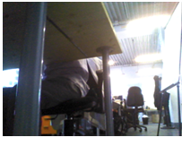
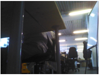
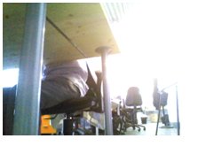

NAOqi Vision - Overview | API | Tutorial | ALVideoDevice - Advanced
Choose your video source by editing the path/to/sdk/preferences/VideoInput.xml file and commenting/uncommenting the video devices.
Before using the camera commands, you must create a proxy on ALVideoDevice. For better efficiency we are going to use a specific proxy by writing:
boost::shared_ptr<ALVideoDeviceProxy> cameraProxy = boost::shared_ptr<ALVideoDeviceProxy>(new ALVideoDeviceProxy(getParentBroker()));
Before you can get a video buffer, you have to subscribe to ALVideoDevice, providing the image format your process is going to require.
// First you have to choose a name for your Vision Module
string nameId = "tutorial_VM";
// Then specify the resolution among : kQQVGA (160x120), kQVGA (320x240),
// kVGA (640x480) or k4VGA (1280x960, only with the HD camera).
// (Definitions are available in alvisiondefinitions.h)
int resolution = kVGA;
// Then specify the color space desired among : kYuvColorSpace, kYUVColorSpace,
// kYUV422ColorSpace, kRGBColorSpace, etc.
// (Definitions are available in alvisiondefinitions.h)
int colorSpace = kRGBColorSpace;
// Finally, select the minimal number of frames per second (fps) that your
// vision module requires up to 30fps.
int fps = 15;
// You only have to call the "subscribe" function with those parameters and
// ALVideoDevice will be in charge of driver initialisation and buffer's management.
nameId = cameraProxy->subscribe(nameId, resolution, colorSpace, fps);
Note
ALVideoDevice can manage up to 8 instances of the same module. For the first instance the nameId returned when subscribing will be the same than the provided nameId. Second one will be followed by _2 (here we’ll get tutorial_VM_2), and so on.
Once your vision module is subscribed to ALVideoDevice, you can get a video buffer. Regardless of the kind of buffer requested (raw buffer or converted one), there are 2 possibilities: either your module works on the local system (the robot or a NAOqi on your desktop) or on a remote machine.
If your module works locally, the memory addresses are shared. So a fast method to get the video buffer is to use the getImageLocal method (or ALVideoDeviceProxy::getDirectRawImageLocal() for advanced users).
// First you have to declare an ALImage pointer to get the video buffer.
ALImage* image;
// Now you can get the pointer to the video structure.
image = ( ALImage* ) cameraProxy->getImageLocal(nameId);
Now, you have an access to the image data.
// You can get some information about the image.
int width = image.getWidth();
int height = image.getHeight();
int nbLayers = image.getNbLayers();
int colorSpace = image.getColorSpace();
long long timeStamp = image.getTimeStamp();
// You can get the pointer to the image data. uInt8
unsigned char* dataPointer = image.getData();
Now, you can implement some processing.
If your module is remote, the memory addresses are not shared. So it’s useless to get the pointer to the video buffer. Your module needs the data contained in the video buffer. Therefore, you have to use the getImageRemote method (or ALVideoDeviceProxy::getDirectRawImageRemote() for advanced users).
// First you have to declare an ALValue to get the video buffer.
ALValue image;
// Then declare the size
image.arraySetSize(12);
// Now you can get the data.
image = cameraProxy->getImageRemote(nameId);
Now you have an array containing image data.
// You can get some informations about the image.
int width = (int) image[0];
int height = (int) image[1];
int nbLayers = (int) image[2];
int colorSpace = (int) image[3];
// image[4] is the number of seconds, image[5] the number of microseconds
long long timeStamp = ((long long)image[4])*1000000LL + (long long)image[5];
// You can get the pointer to the image data and its size
const char* dataPointer = static_cast<const char*>(image[6].GetBinary());
int size = image[6].getSize();
Note
Once you don’t need the image anymore, you have to release it (See the How ALVideoDevice manages Vision Module needs section for a better understanding of the reasons).
// Release image
cameraProxy->releaseImage(nameId);
The camera has a list of parameters which can be modified.
There are methods to get and to change those parameters. Here is an example:
// First, get a proxy on the video input module if you haven't already done it.
boost::shared_ptr<ALVideoDeviceProxy> cameraProxy = boost::shared_ptr<ALVideoDeviceProxy>( new ALVideoDeviceProxy(getParentBroker()));
// Now you are able to get the value of any parameter.
int BrightnessValue = ( cameraProxy.getParam(kCameraBrightnessID ) );
//You can change any parameter's value with the following method.
cameraProxy.setParam(kGainID, 120);
| Parameter | Min value | Max value | Camera ID name | ID value |
|---|---|---|---|---|
| Brightness | 0 | 255 | kCameraBrightnessID | 0 |
| Contrast | 0 | 127 | kCameraContrastID | 1 |
| Saturation | 0 | 255 | kCameraSaturationID | 2 |
| Hue | -180 | 180 | kCameraHueID | 3 |
| Red Chroma | 0 | 255 | kCameraRedChromaID | 4 |
| Blue Chroma | 0 | 255 | kCameraBlueChromaID | 5 |
| Gain | 0 | 255 | kCameraGainID | 6 |
| Horizontal Flip | 0 | 1 | kCameraHFlipID | 7 |
| Vertical Flip | 0 | 1 | kCameraVFlipID | 8 |
| Auto Exposition | 0 | 1 | kCameraAutoExpositionID | 11 |
| Auto White Balance | 0 | 1 | kCameraAutoWhiteBalanceID | 12 |
| Auto Gain | 0 | 1 | kCameraAutoGainID | 13 |
| Resolution | kQVGA | kVGA | kCameraResolutionID | 14 |
| Frames Per Second | 1 | 30 | kCameraFrameRateID | 15 |
| Exposure (time in ms = value x 33/510) | 0 | number of lines of the sensor (480 + 30 covered lines = 510) | kCameraExposureID | 17 |
| Camera Select | 0 (top cam.) | 1 (bottom cam.) | kCameraSelectID | 18 |
| Reset camera registers (RESERVED) | NA | NA | kCameraSetDefaultParamsID | 19 |
| Exposure Correction (= value/3, switch automatically in AEC average based algorithm) | -6 | 6 | kCameraExposureCorrectionID | 21 |
| Auto Exposure Control Algorithm | 0 (average based algorithm) | 1 (histogram based algorithm) | kCameraAecAlgorithmID | 22 |
| Fast switch (both cameras must run in the same mode) | NA | NA | kCameraFastSwitchID | 23 |
| Sharpness | 0 | 31 | kCameraSharpnessID | 24 |
| Green gain for Auto White Balance | 0 | 127 | kCameraAwbGreenGainID | 25 |
| Auto Black Level Compensation | 0 | 255 | kCameraAblcID | 26 |
| Target value for ABLC | 0 | 255 | kCameraAblcTargetID | 27 |
| Authorized range around the ABLC target value | 0 | 255 | kCameraAblcStableRangeID | 28 |
| BLC blue value | 0 | 255 | kCameraBlcBlueID | 29 |
| BLC red value | 0 | 255 | kCameraBlcRedID | 30 |
| BLC GreenB value | 0 | 255 | kCameraBlcGbID | 31 |
| BLC GreenR value | 0 | 255 | kCameraBlcGrID | 32 |
| Parameter | Min value | Max value | Camera ID name | ID value | Remarks |
|---|---|---|---|---|---|
| Brightness | 0 | 255 | kCameraBrightnessID | 0 | Auto Exposition must be enabled |
| Contrast | 0 | 127 | kCameraContrastID | 1 | |
| Saturation | 0 | 255 | kCameraSaturationID | 2 | |
| Hue | -180 | 180 | kCameraHueID | 3 | Disabled |
| Gain | 0 | 255 | kCameraGainID | 6 | Auto Exposition must be disabled |
| Horizontal Flip | 0 | 1 | kCameraHFlipID | 7 | |
| Vertical Flip | 0 | 1 | kCameraVFlipID | 8 | |
| Auto Exposition | 0 | 1 | kCameraAutoExpositionID | 11 | |
| Auto White Balance | 0 | 1 | kCameraAutoWhiteBalanceID | 12 | |
| Camera Resolution | kQVGA | k4VGA | kCameraResolutionID | 14 | Not to be set manually |
| Frames Per Second | 1 | 30 | kCameraFrameRateID | 15 | Not to be set manually |
| Exposure (time in ms = (value * 2) / 5 | 1 | 512 (204.8ms) | kCameraExposureID | 17 | Auto Exposition must be disabled |
| Camera Select | 0 | 1 | kCameraSelectID | 18 | 0: Bottom Camera 1: Top Camera |
| Reset camera registers | NA | NA | kCameraSetDefaultParamsID | 19 | Reserved |
| Auto Exposure Algorithm | 0 | 3 | kCameraExposureAlgorithmID | 22 |
For further details, see: Auto Exposure Algorithm. |
| Sharpness | -7 | 7 | kCameraSharpnessID | 24 | |
| White Balance | -120 | -36 | kCameraWhiteBalanceID | 33 | Auto White Balance must be disabled |
For auto exposure algorithm, the measurement engine subdivides the image into 25 windows organized as a 5 x 5 grid with the following weight:
| 0.25 | 0.25 | 0.25 | 0.25 | 0.25 |
| 0.25 | 0.75 | 0.75 | 0.75 | 0.25 |
| 0.25 | 0.75 | 1.00 | 0.75 | 0.25 |
| 0.25 | 0.75 | 0.75 | 0.75 | 0.25 |
| 0.25 | 0.25 | 0.25 | 0.25 | 0.25 |
Example illustrating the impact of Auto Exposure Algorithm parameter:
|  |  |  |
| 0: Average scene Brightness | 2: Adaptive weighted auto exposure for hightlights | 3: Adaptive weighted auto exposure for lowlights |
Once you’re done with the task associated with your module, you should unsubscribe it from ALVideoDevice.
//unsubscribe your vision module.
cameraProxy->unsubscribe(nameId);
For a given Vision Module, you can record at any time and in the video device native images currently accessed by the VM. Let’s do it in Python for Monitor...
# First launch Monitor and display NaoCam images
camProxy = ALProxy("ALVideoDevice", IP, PORT)
nameId = "monitor"
numberOfImagesToRecord = 100
period = 2
success = camProxy.recordVideo(nameId, "/home/nao/naoqi/data/myFile", numberOfImagesToRecord, period)
# This will record 100 images in myFile.arv at half the framerate of Monitor.
# Stop grabbing
camProxy.stopVideo()
And now let’s do it without needing to run another module
camProxy = ALProxy("ALVideoDevice", IP, PORT)
nameId = "pythonVM"
nameId = camProxy.subscribe(nameId, kQVGA, kYUV422ColorSpace, 30)
numberOfImagesToRecord = 123
period = 1
success = camProxy.recordVideo(nameId, "/home/nao/naoqi/data/myFile", numberOfImagesToRecord, period)
# By calling stopVideo at the end of the loop, we are going to record 100 (and not 123) images in myFile.arv
for i in range(0, 100):
image = camProxy.getImageLocal(nameId)
camProxy.releaseImage(nameId)
# Stop grabbing
camProxy.stopVideo()
Let’s replay the ARV file recorded in the previous section and display it in Monitor using a Python script.
First modify the AL_DIR/preferences/VideoInput.xml file and relaunch NAOqi (How to change the video source)
# First modify the AL_DIR/preferences/VideoInput.xml file and relaunch NAOqi
camProxy = ALProxy("ALVideoDevice", IP, PORT)
pRange = [20, 80]
pLoop = True
pReplayMode = 3
pStreamNumber = 0 #optional
camProxy.setVideo("/home/nao/naoqi/data/myFile.arv", pRange, pLoop, pReplayMode, pStreamNumber)
# You can now launch Monitor that will display the 21st frame of the file
# Provide the 22nd image to the VIM that will transmit it to the GVM
camProxy.nextImage()
# Plays a new frame every 2 seconds. NextImage() and previousImage() can still be called.
camProxy.replaySpeed(0.5)